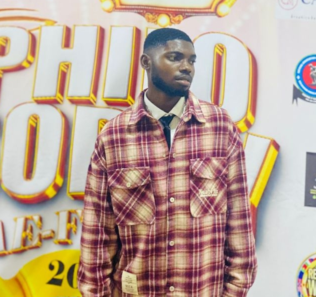
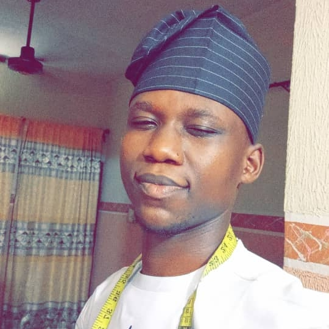

Our Team
Meet the Team
"Our team at Chiven Classic is a passionate and talented group of individuals who share a love for fashion and a commitment to excellence. From our expert designers to our skilled tailors, every member of our team is dedicated to delivering exceptional products and services that exceed our clients' expectations."
Chidiebere Emenike
Founder & CEO
Chidiebere Emenike is the visionary founder and CEO of Chiven Classic, a luxury fashion brand that embodies timeless elegance and sophistication. With a passion for fashion that dates back to her early years, Chidiebere has spent years honing her craft and building a reputation for excellence in the industry.
Early Life & Education
Born and raised in Nigeria, Chidiebere developed a keen eye for style and design at a young age. She pursued her passion for fashion, and her dedication has led her to where she is today.
Career & Inspiration
Chidiebere's journey in fashion has been marked by a commitment to excellence and a desire to create products that empower individuals to express their unique style and confidence. Her vision for Chiven Classic is to make luxury fashion accessible and inclusive.
Leadership & Values
As CEO, Chidiebere leads Chiven Classic with a focus on innovation, quality, and customer-centricity. She believes that fashion should be a force for good, and is committed to sustainability and social responsibility.
Personal Life
Outside of Chiven Classic, Chidiebere is a creative individual who enjoys exploring new ideas and interests. She's proud to be part of the fashion community and is passionate about inspiring others to pursue their dreams.
Emenike Chinaecherem
Co-Founder

Chinaecherem Emenike is the Co-Founder of Chiven Classic, bringing a wealth of expertise in business strategy and operations to the table. With a strong background in management, Chinaecherem has been instrumental in shaping the direction of Chiven Classic and driving its growth.
Role & Responsibilities
As Co-Founder, Chinaecherem oversees the operational aspects of Chiven Classic, ensuring that the brand's vision is translated into actionable plans and executed flawlessly. Her attention to detail and analytical mindset have been crucial in establishing Chiven Classic as a reputable brand in the fashion industry.
Collaboration & Impact
Chinaecherem works closely with Chidiebere Emenike, providing strategic guidance and support to help bring Chiven Classic's vision to life. Her contributions have been vital in building a strong foundation for the brand's success.
Chike Emmanuel Chinedu (Emmys Stitches)

Meet Chike Emmanuel Chinedu, the creative force behind Chiven Classic's stunning designs. Better known as Emmy Stitches, this talented designer brings a unique blend of traditional Nigerian flair and modern sophistication to every piece he creates.
Emmy's Style
Emmy's designs are all about effortless elegance, with intricate details and bold statements that make you go "wow!" From statement pieces to timeless classics, his creations are designed to make you feel confident and beautiful.
Inspiration & Influence
Growing up in Nigeria, Emmy was inspired by the vibrant colors, patterns, and textures of African culture. He combines these influences with modern trends and techniques to create truly unique pieces that showcase his exceptional skill and craftsmanship.
Working with Chiven Classic
As Lead Designer at Chiven Classic, Emmy is responsible for creating collections that are both stylish and sustainable. His passion for fashion is contagious, and his dedication to quality is evident in every stitch and seam.